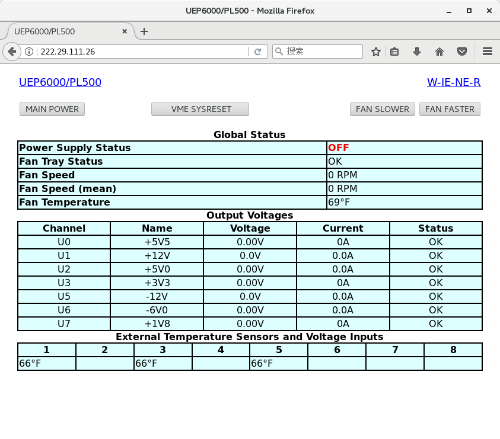
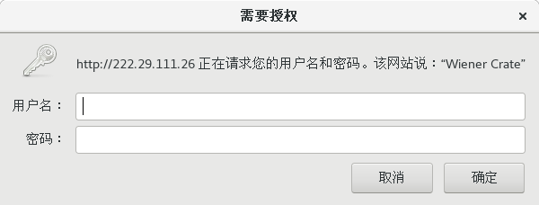
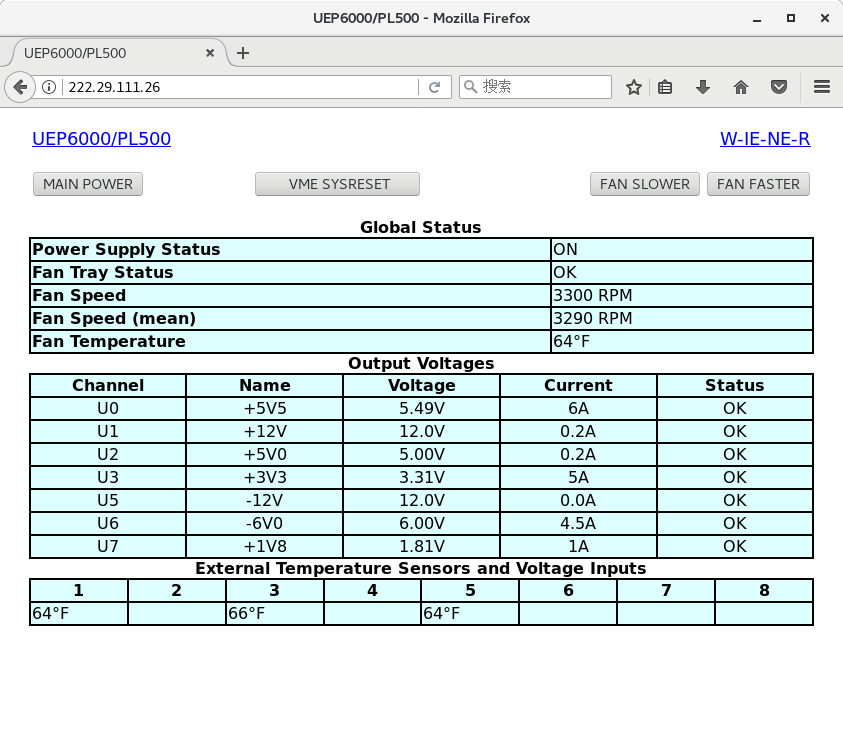

机箱¶
远程控制¶

如上图中将机箱网口接入网线，右侧显示屏中会快速闪过所分配的 IP，例如这里 IP 为 222.29.111.26。如果没看清该 IP，则拔出网线重新连接。
如上图，在浏览器中输入 IP，则可进入该控制页面。图中展示的是机箱关闭状态。
按钮 MAIN POWER 用来控制机箱开启及关闭，首次点击会弹出以上登陆框。
输入用户名 “private”，默认密码 “private”
上图为机箱开启后的监视的参数。
其中，右上角的按钮 FAN SLOWER 和 FAN FASTER 用来调节风散的转速。
插槽¶
机箱共有 14 个插槽，底下分别标有数字 1-14。其中插槽 1 为控制器插槽，2-14 为采集卡插槽。